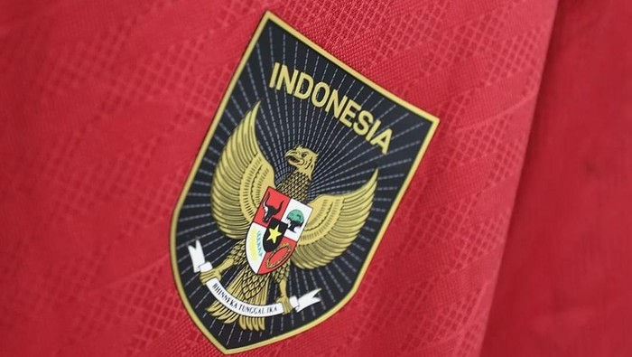

Jakarta - Timnas Indonesia U-23 berpesta gol ke gawang Chinese Taipei U-23 di Kualifikasi Piala Asia U-23 2024. Garuda Muda menang besar 9-0 Baca artikel sepakbola, "Indonesia U-23 Vs Chinese Taipei U-23: Garuda Muda Pesta Gol 9-0"
Laga Indonesia U-23 vs Taiwan U-23 digelar di Stadion Manahan, Solo, Sabtu (9/9) malam WIB. Indonesia sudah unggul 5-0 di babak pertama.
Dalam pertandingan di Stadion Manahan, Solo, Sabtu (9/9) malam WIB, Indonesia sudah membuka keunggulan saat pertandingan baru berjalan dua menit. Marselino Ferdinan menjebol gawang Chinese Taipei lewat sebuah tendangan bebas.